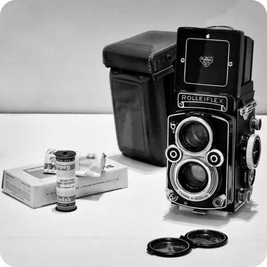
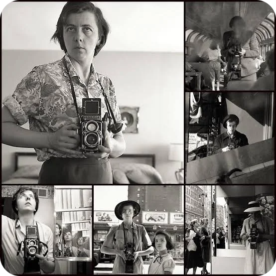
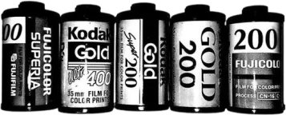
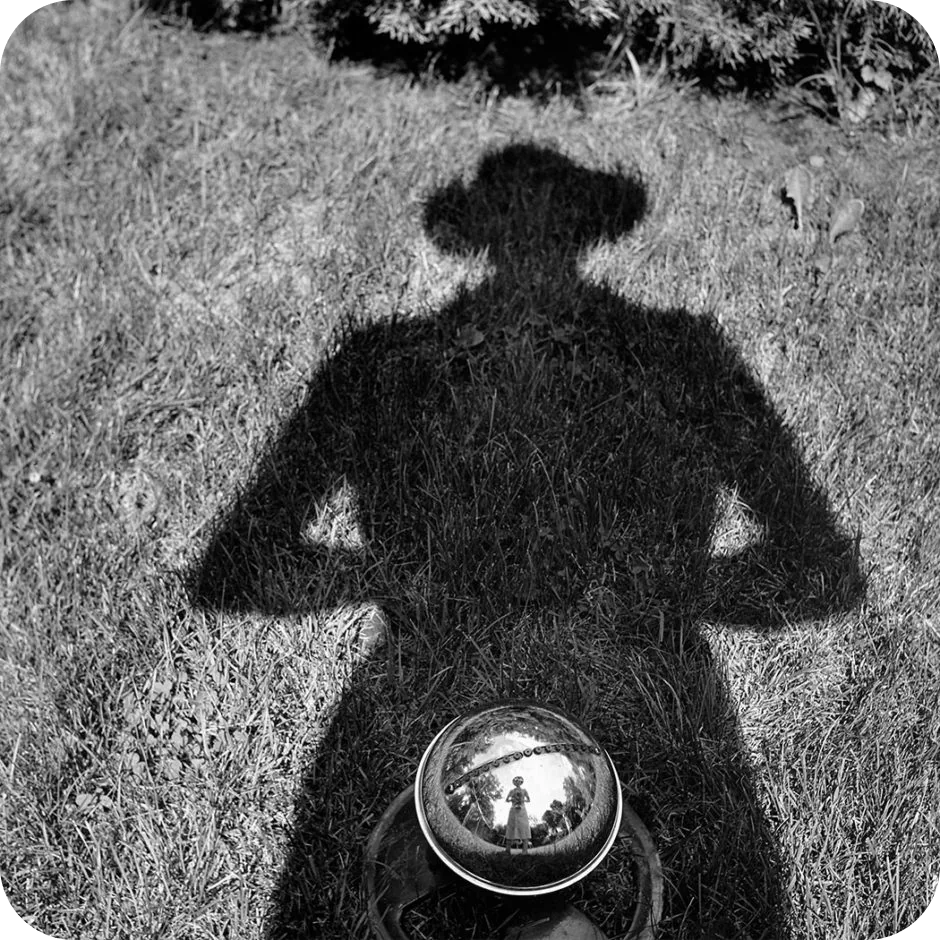
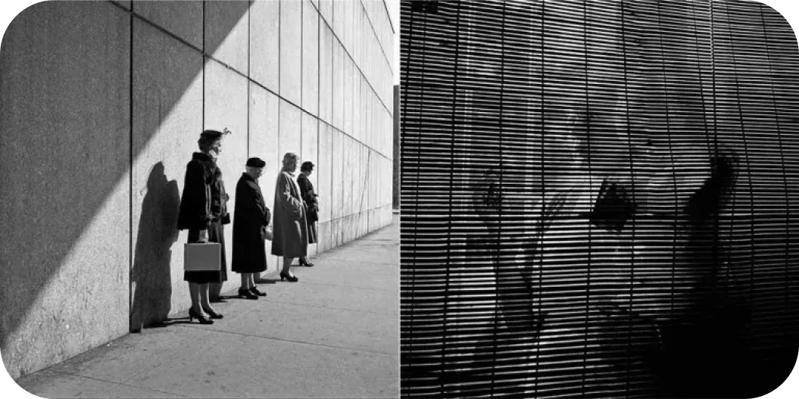
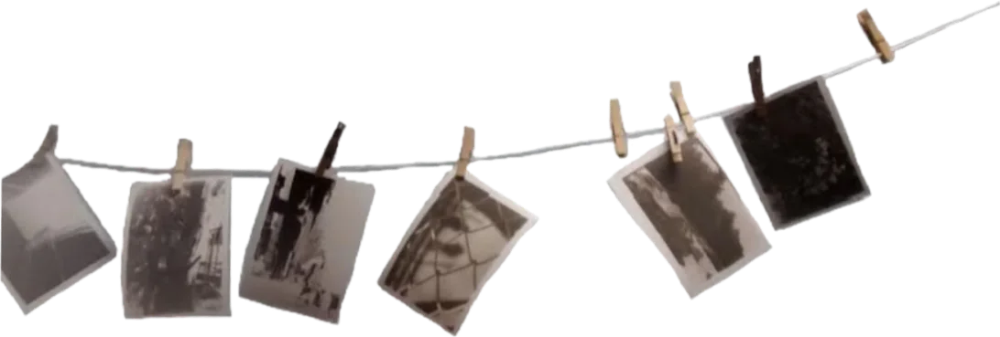
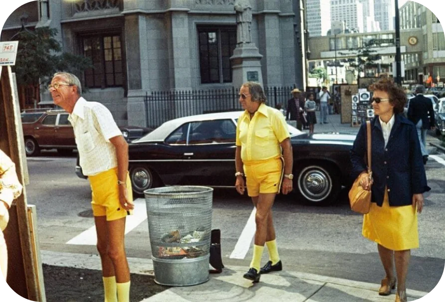
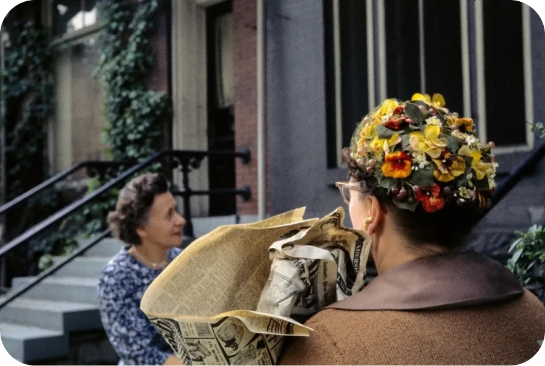

L’Art & Le Regard de Vivian Maier
Une immersion dans le processus créatif d’une photographe hors du commun.
Le Rolleiflex : Une signature visuelle


Vivian Maier photographiait principalement
avec un appareil Rolleiflex bi-objectif,
tenu au niveau de la poitrine.
Cette contre-plongée subtile et la visée par
le haut lui permettaient de capter l’intimité
des passants sans rompre le contact
visuel, créant ainsi une proximité
unique avec ses sujets.

Ombres, Miroirs & Autoportraits

Les autoportraits occupent une
place centrale dans son œuvre.
À travers les vitrines de magasins, les
miroirs brisés ou la simple projection
de son ombre sur le trottoir, Vivian Maier
affirme sa présence discrète mais
obsessionnelle dans l’espace urbain.


L’Évolution vers la Couleur (Kodachrome)
À partir des années 1970, l’artiste adopte la
pellicule couleur (Kodachrome et Ektachrome).
La couleur devient alors un élément narratif
à part entière : des détails de vêtements
vifs, le jaune éclatant des taxis et les jeux
de lumière subtils dans les rues de Chicago.

